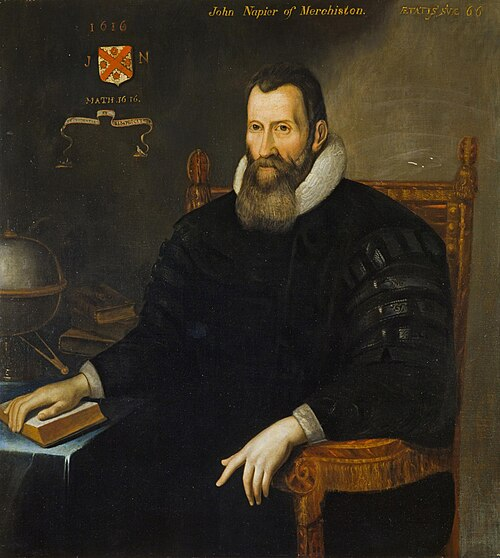

QUESTION RODS
Point at a rod and hold

JOHN NAPIER OF MERCHISTON · 1550–1617
THE LAST PORTRAIT
Ask Napier
Waking the portrait…
Raise your hand and ask your own question aloud
THE LAST PORTRAIT
Ask Napier
Point at a question rod, or raise your hand and ask him aloud. Your browser will ask to use the camera, to see your hands, and the microphone, to hear your question. The video never leaves this computer; only what you ask is sent, to be written down.
Still there?
Starting over in 10…
Raise a hand to keep talking